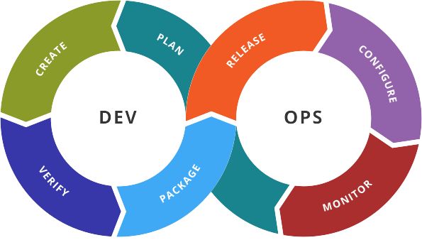

DevOps (and SRE)
Alberto Molina Coballes, José Luis Rodríguez Rodríguez and José Domingo Muñoz Rodríguez
Cloud Computing in European schools. Project: 2017-1-ES01-KA202-038471


Theme by: reveal.js
Disclaimer
The European Commission support for the production of this
publication does not constitute an endorsement of the contents
which reflects the views only of the authors, and the Commission
cannot be held responsible for any use which may be made of the
information contained therein
Development cycle
- Analysis
- Design
- Development
- Testing
- Deployment
Continuous integration (CI)
- Common practice in agile development
- Changes are applied continuously
- Practice opposed to waterfall development
- Integration automated: Compilation and testing (at least unitary
and integration tests)
- Objective: To detect bugs quickly and release often
Some tools used
- Control version: git, svn, ...
- CI: jenkins, bamboo, travis and others
Objectives and responsibilities
- Developers (devs): They want every single change to be
included in production environment as soon as possible
- Administrators (ops): They want the systems to remain stable
without any issue
DevOps
- Developers
- Testing (Q&A)
- Operators

Continuous delivery and deployment
- A step forward CI
- The changes must be releasable (continuous delivery)
- The changes must be deployable (continuous deployment)
- Q&A and Ops must be included in the chain
Toolset
- Version control
- Packaging tools
- Scenarios orchestration
- Configuration management software
DevOps without devs?
- Infrastructure as code
- A system administrator only coding and monitoring?
- You can't touch anything in the production
environment
- Any step must be coded, tested and delivered
Site Reliability Engineer (SRE)
- It can work together with devs or not
- Focused on production environments
- Infrastructure automated management
- Updates!
- Event handling
- Typical role in high demanding environments